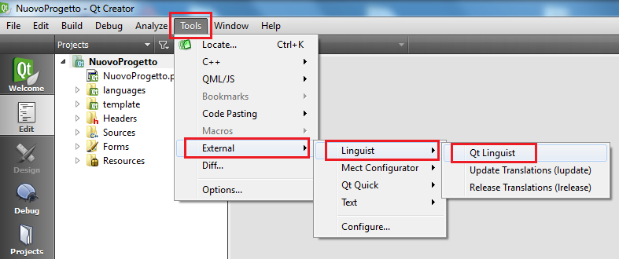
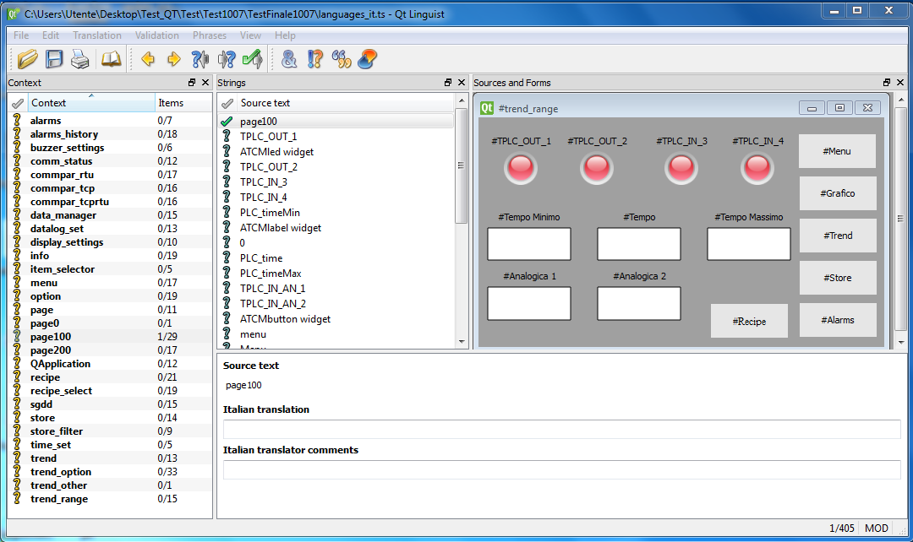

Per poter avere la stessa interfaccia grafica con le traduzioni in lingue diverse, usare il tool Qt Linguist.
Il template del progetto è già configurato in modo da avere già pronti i files da compilare delle traduzioni in italiano e in inglese.
Per effettuare le traduzioni si usa il tool Qt linquist che si lancia seguendo la seguente immagine:

Dal menu File → Open scegliere il file languages_*.ts all’interno del progetto della lingua desiderata (affinché il file *.ts sia presente bisogna almeno aver compilato una volta il proprio progetto).

In automatico il tool proporrà i vari campi di testo usati nell’interfaccia, per ciascun testo che si desidera tradurre inserire la traduzione e premere CTRL e invio per confermare. Terminate le traduzioni salvare il file e chiudere Qt Linguist. Per vedere correttamente le lingue occorre aver fatto, almeno una volta nel progetto, “Clean All” e “Run qmake”, vedi capitolo “Errori di compilazione”.